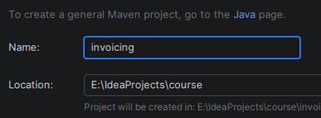
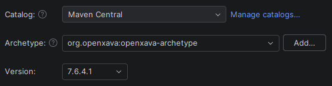
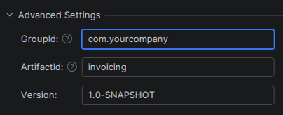
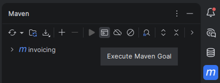
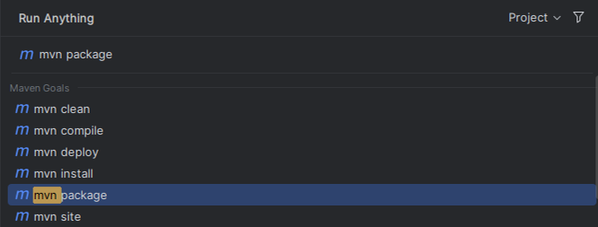
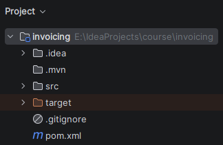
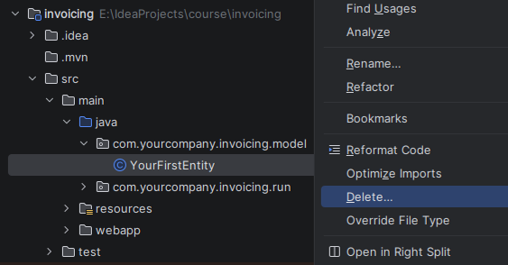
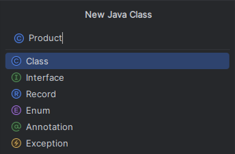
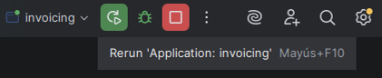

Follow the next video to create and run your first OpenXava project using IntelliJ IDEA:
Or if you don't like videos follow the instructions below.
First, you have to create a new project using a Maven archetype from IntelliJ. To do this, choose the option File > New > Project...:

Once in the dialog, choose the Maven Archetypes option within the Generators section:

Then type the project name, invoicing in the Name field:

Now it's time to choose the archetype. In the Catalog field select Maven Central and in the Archetype field type openxava so it shows you all the OpenXava archetypes. There choose openxava-archetype.
As version choose the latest available OpenXava version, which is currently 7.6.4.1. Never choose version 7.X.X.

To finish, go to the bottom of the dialog and open the Advanced Settings section and in the GroupId field put com.yourcompany which is the value we will use in this course:

If everything went well, the dialog should look more or less like this:

Click the Create button to create the project.
Once the new project is created, we need to do a mvn package to get it ready to work. This is something you only need to do the first time. Click on the button with an M on the right side of IntelliJ. This opens the Maven view where you need to click the "Execute Maven Goal" button:

This brings up a dialog where you can choose the task you want to execute. In this case choose mvn package:

Now your project is ready to start writing code:

Developing is very easy: you just have to add entities to make your application grow. Entities are added in the model package. Open the src/main/java folder, there open the com.yourcompany.invoicing.model package. You will see that it contains a sample entity. Delete it:

Now we can add our own entities. We'll start with a simplified version of Customer with only number and name.
In the src/main/java folder select the com.yourcompany.invoicing.model package and right-click to choose New > Java Class:

Then type Customer as class name and press ENTER:

Note that the C of Customer is uppercase, this is very important, all Java classes start with uppercase.
The initial code that IntelliJ provides for Customer is very simple:
package com.yourcompany.invoicing.model;
public class Customer {
}
Now, you have to fill this class to convert it to an entity suitable for OpenXava. You only need to add the @Entity annotation and the number and name properties:
package com.yourcompany.invoicing.model;
import javax.persistence.*;
import org.openxava.annotations.*;
import lombok.*;
@Entity // This marks Customer class as an entity
@Getter @Setter // This makes all fields below publicly accessible
public class Customer {
@Id // The number property is the key property. Keys are required by default
@Column(length=6) // The column length is used at the UI level and the DB level
int number;
@Column(length=50) // The column length is used at the UI level and the DB level
@Required // A validation error will be shown if the name property is left empty
String name;
}
With this you have enough code (just one class) to run your application. Let's run it.
Open the com.yourcompany.invoicing.run package and right-click on the invoicing class and choose Run 'invoicing.main()':

Wait until the console shows a message saying "Application started", like this:

Your application is now running. To see it, open your favorite browser (Chrome, Firefox, Edge or Safari) and go to the following URL:
http://localhost:8080/invoicing
You get your application running for the first time. To start click on the Sign in button:

Now, enter admin/admin and click on Sign in:

Then on the left side a list of modules will be shown, choose Customers:

Use the Customers module to create new customers, just enter number and name and press Save.

Click on List to see the customers you have created. Congratulations, you have your first OpenXava application running.
From now on, developing with OpenXava is very easy. Simply write a class and you can see the result in the browser. Let's create an entity for Product.
Select the com.yourcompany.invoicing.model package and right-click to choose New > Java Class:
Then type Product as class name and press ENTER:

Write the next code for Product:
package com.yourcompany.invoicing.model;
import javax.persistence.*;
import org.openxava.annotations.*;
import lombok.*;
@Entity @Getter @Setter
public class Product {
@Id @Column(length=9)
int number;
@Column(length=50) @Required
String description;
}
Now, click the Rerun button, which is the green button at the top of the IDE. This stops the application and restarts it:

To see your new entity in action open your browser and go to the URL:
http://localhost:8080/invoicing/modules/Product
After signing in with admin/admin you'll get:

Yes, you have a new module running, and just by writing a simple class. Now you can concentrate on growing your application.
Congratulations! You have created your first OpenXava application. If not and you have had any problem with the above example, ask in the forum:
We'll help you to overcome any difficulty.
This getting started guide is the lesson 1 of a complete OpenXava course. This course is meant to teach you how to develop enterprise applications with OpenXava, as well as other Java related technologies, tools and frameworks. Together we will develop step by step a complete application from scratch. The application chosen is a small invoicing application with invoices, customers, products and so on. This application is just a brief way to learn some typical cases in business applications. You can apply everything you learn with the invoicing application to any other business application of any other domain.
This is the content of the course:
You're ready to continue to the next lesson, however you should consider acquiring some base knowledge, such as:
Do you want to use another IDE? Do you want to go against MySQL, PostgreSQL, Oracle, Microsoft SQL Server, AS/400, Informix, Db2 or Firebird? Do you want a detailed reference guide? Look at the OpenXava documentation, that includes this and much more.
Are you ready? Go to Lesson 2